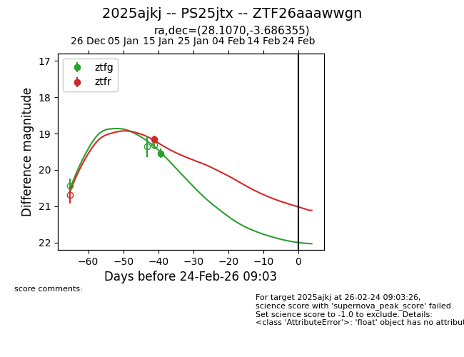
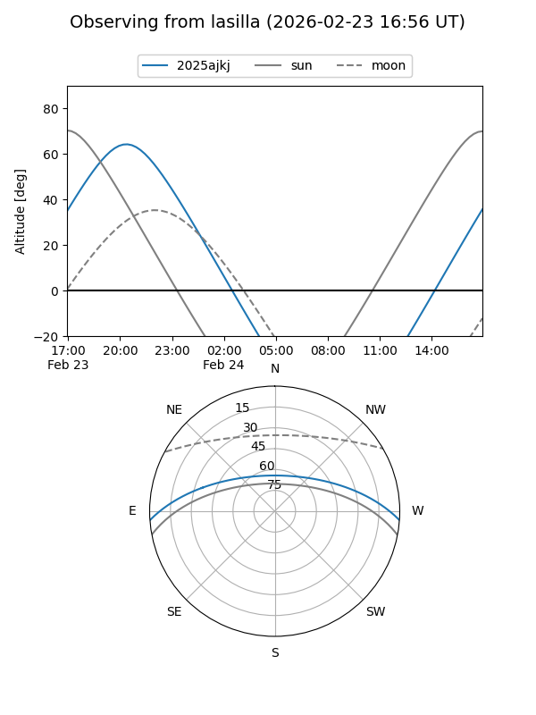
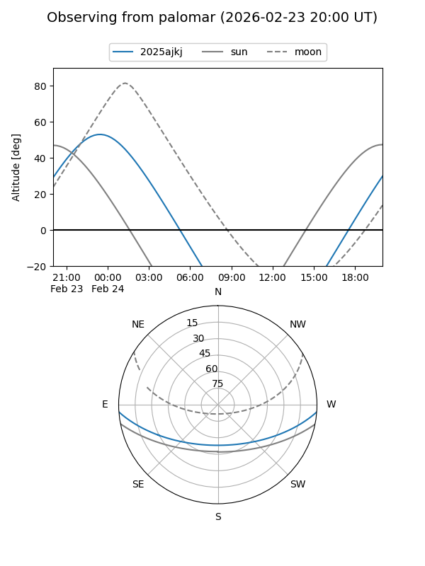
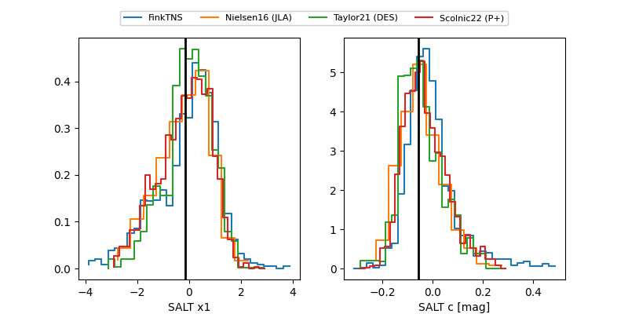

2025ajkj
Target 2025ajkj at 2026-01-18 03:50
Aliases and brokers:
FINK: link
Lasair: link
ALeRCE: link
TNS: link
YSE: link
alt names
ZTF26aaawwgn (ztf,fink_ztf)
2025ajkj (tns,yse)
PS25jtx (panstarrs)
Coordinates:
equatorial (ra, dec) = 28.1070,-3.68635
equatorial (HMS+DMS) = 01:52:25.67,-03:41:10.88
galactic (l, b) = (157.4360,-62.39958)
Flags:
Photometry:
last ztfg=19.55, ztfr=19.16
1 ztfg, 1 ztfr detections
Lightcurve

Visibility


Additional plots
